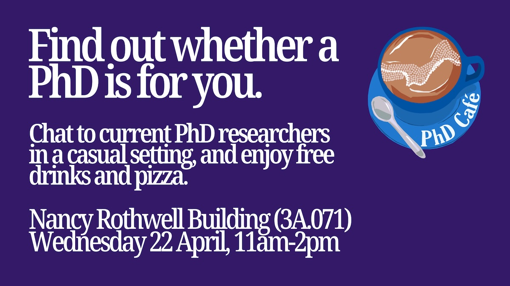

21 Opportunities for PhD research
There are several routes into doing a PhD at the University of Manchester, including AI at Manchester shown in figure 21.1.

Figure 21.1: The University of Manchester’s AI@Manchester theme, part of the Digital Futures platform (formerly the Institute for Data Science & Artificial Intelligence) is an access point to the University’s expertise in data science and artificial intelligence. It facilitates interactions between researchers and problem holders, owns the University’s data science strategy, and delivers sustainable support for the community and is one of several routes into doing a PhD at the University of Manchester.
Chapter 27 briefly discussed some of the things you’ll need to think about if you’re interested in doing a PhD in Manchester (or elsewhere) but a good way to find out if a PhD is right for you is to talk to current students, speaking of which…
21.1 PhD Cafe, 22nd April
PhD Café is an informal networking session where current undergraduate and master’s students can speak to PhD researchers and admissions staff from the Faculty, to decide whether pursuing a PhD is right for them. The goal is to offer a relaxed, friendly environment where students can ask questions and find out more about postgraduate research at the University of Manchester. The next PhD Café will be held on Wednesday, 22nd April from 11am-2pm in the Nancy Rothwell Building, Room 3A.071. There will be free tea, coffee, soft drinks and pizza for all attendees. You can be from any year of study, from foundation year to final year students, to attend. Everyone is welcome, Find out more and register at bit.ly/phdcafe26

Figure 21.2: Find whether a PhD is right for you at PhD cafe on Wednesday 22nd April from 11am to 2pm in the Nancy Rothwell Building, register at bit.ly/phdcafe26
21.2 Creative Manchester PhDs, apply by 30th April
Six supervisor-led interdisciplinary projects bring together outstanding expertise by over 15 academic staff in arts, languages and cultures, computer science, social anthropology and law to address timely societal questions around AI’s impact on agency, authorship, imagination, inequality, and social relationships. Studentships will be organised around three strands:
- AI for creativity
- Creativity for AI
- Creativity of AI
All supported by a methodological training theme, creative AI methods. The Centre for Digital Humanities, Cultures and Media (DHCM) will serve as the intellectual and organisational home of the CreativeAI studentships, with members already working at the intersection of AI, creativity, society, and culture.
21.2.1 Key features of this studentship
- Receive a fully funded studentship covering tuition fees and an annual stipend at the UKRI rate (previously 2025/26 £20,780 per year) for 3.5 years.
- Research Training and Support Grant (RTSG): £3,000 total over 3.5 years.
- CreativeAI studentship methods training and cohort-building activities.
21.2.2 One PhD studentship available
There is currently one final project available:
Apply by 30th April (deadline extended), any questions or comments should be directed to the contacts listed on the studentship above.
If you are looking for the other five PhD opportunities with Creative Manchester that were posted on this page, the deadline for applications was the 30th March 2026.